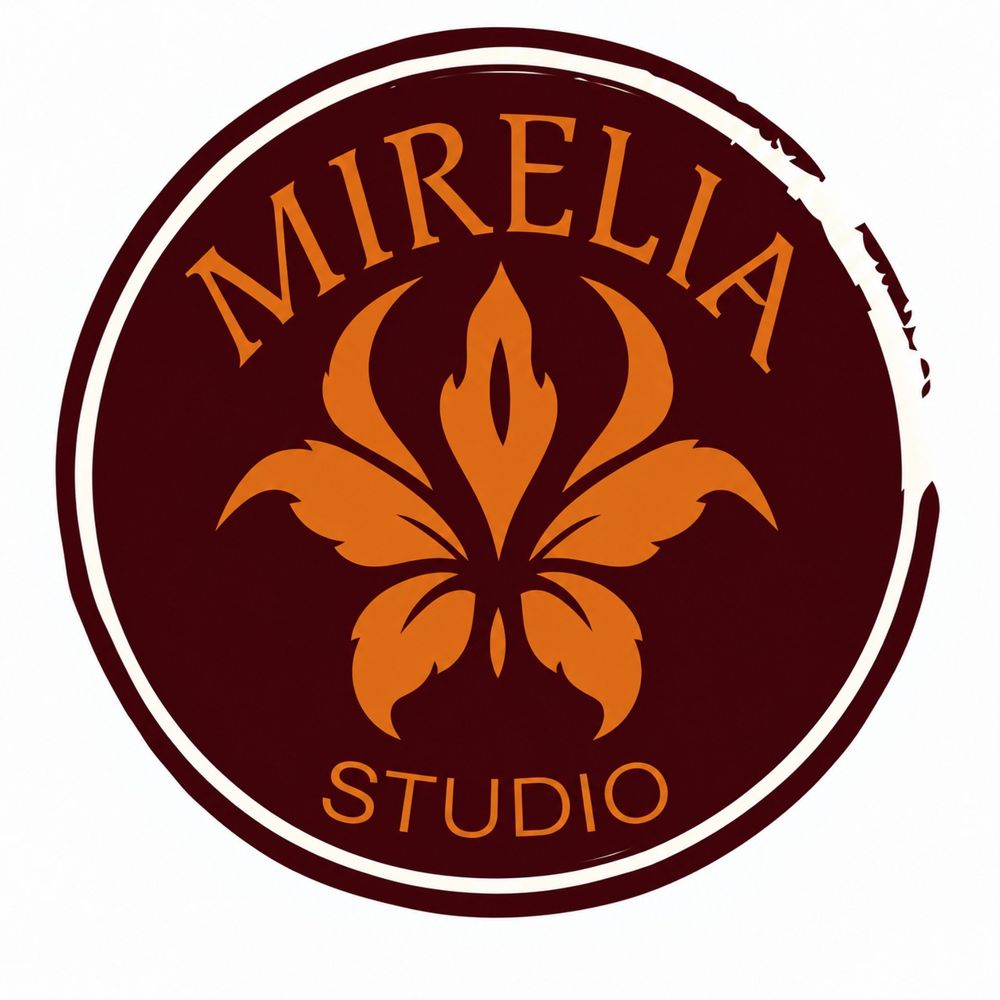
Donde la belleza esconde fuego
Crear animaciones con una variedad de técnicas y experimentaciones, para explorar historias de temas difíciles asociadas a la cultura y el entorno, y contrastarlas en narrativa y técnica.
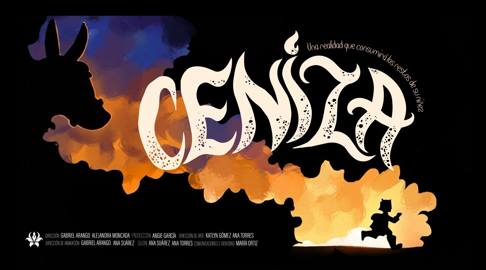
Cuando su campamento es atacado, un niño soldado debe elegir entre asegurar su supervivencia o entrar a un establo en llamas para salvar al burro que acababa de rechazar.
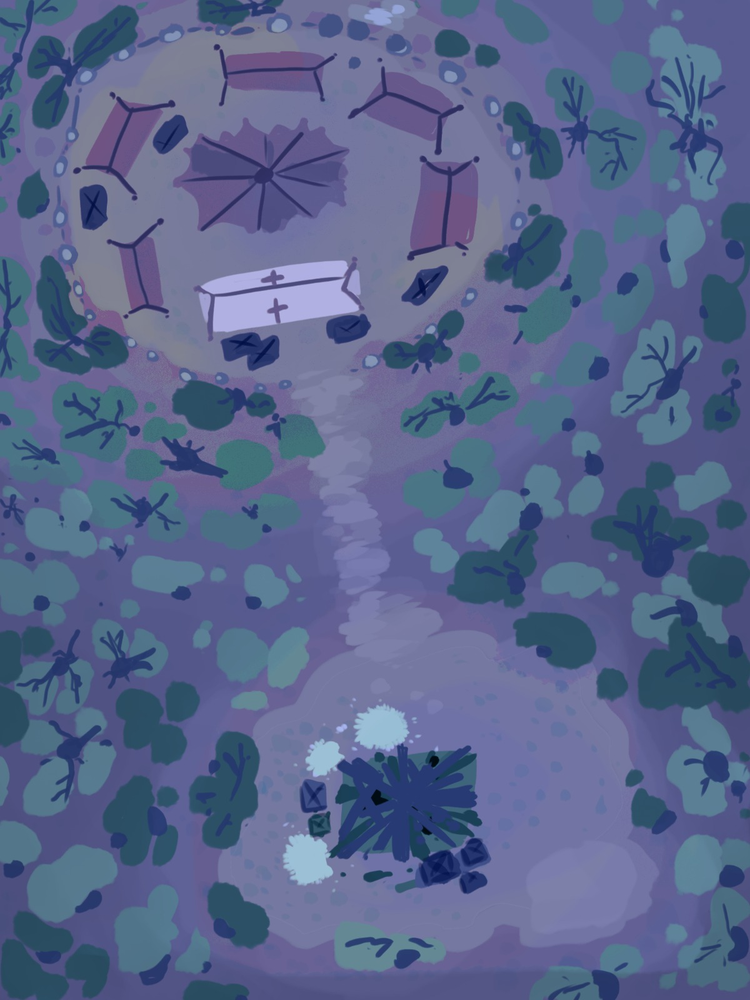
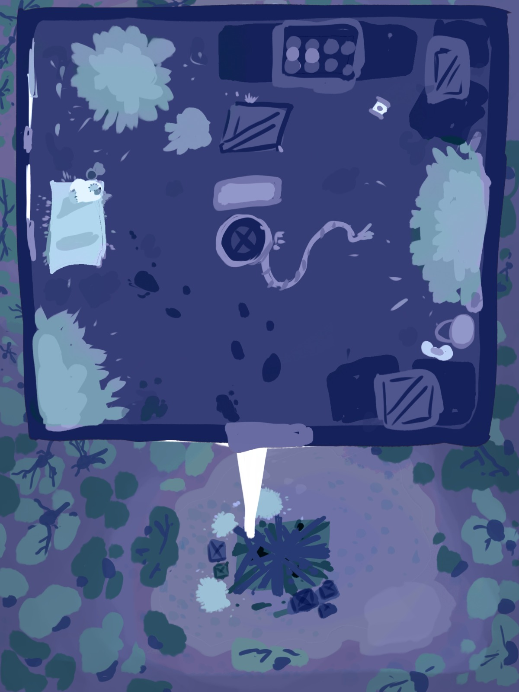
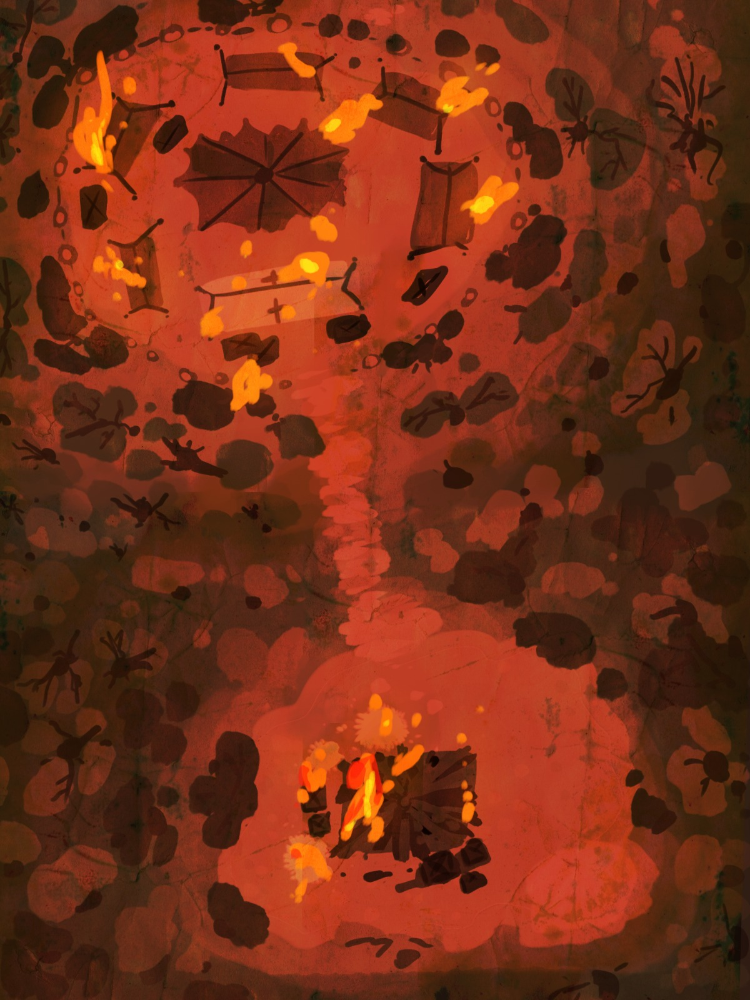
Ceniza es un universo multinivel que transcurre en los años 40, en un campamento de guerra ficticio, dentro de un bosque húmedo con rasgos latinoamericanos, específicamente en una cabaña vieja que sirve de establo. Con colores poco realistas, formas exageradas y animales como el burro que expresan emociones casi humanas, su sociedad vive bajo un gobierno totalitario con propaganda constante y organización por rangos. Para todos, la guerra es la identidad y sentir es debilidad: solo el soldado fuerte merece volver a la vida común.
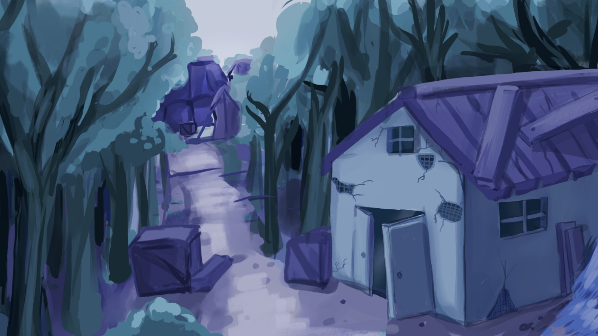
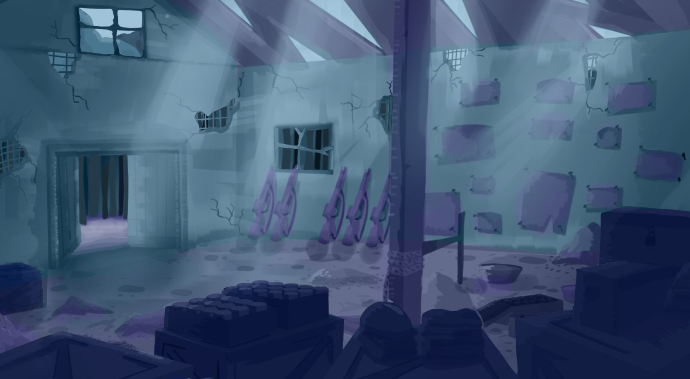
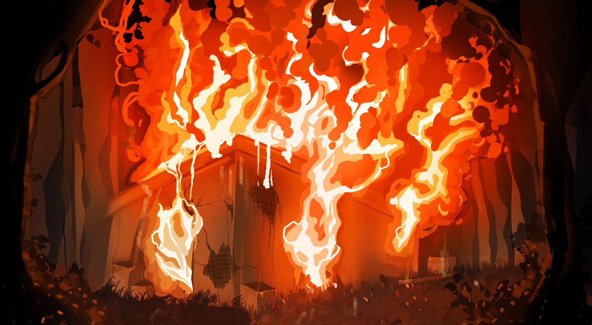
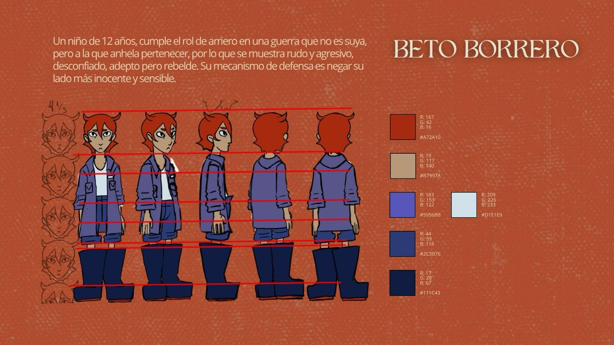
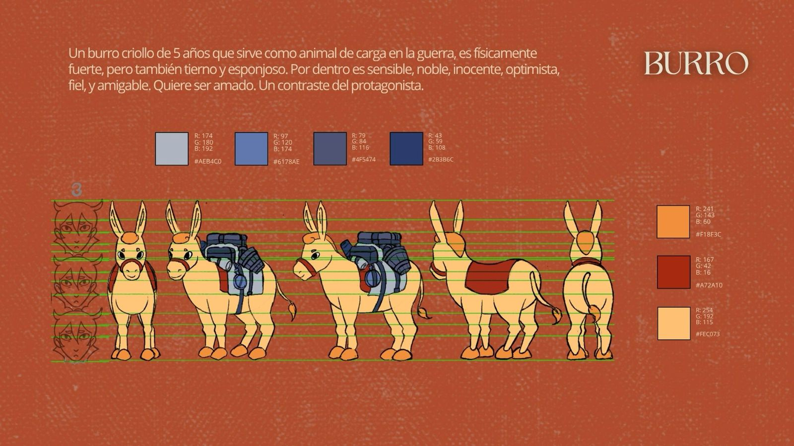
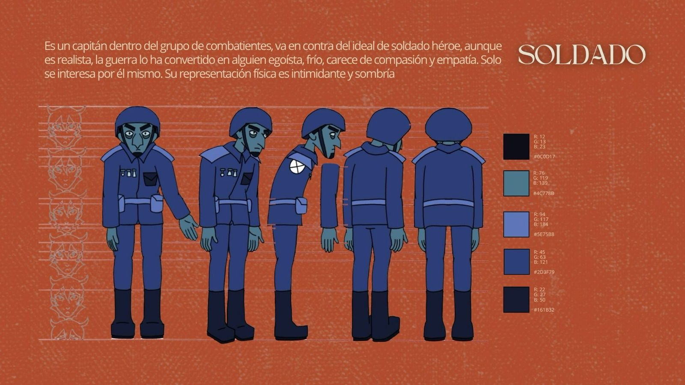
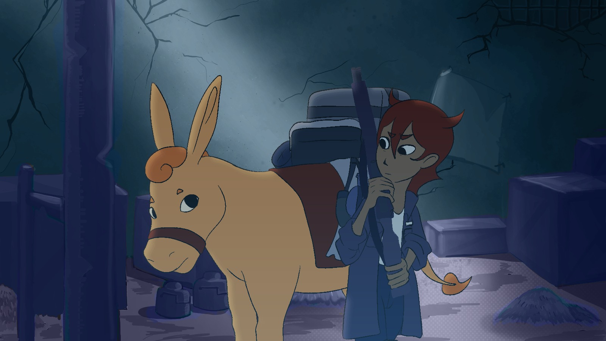
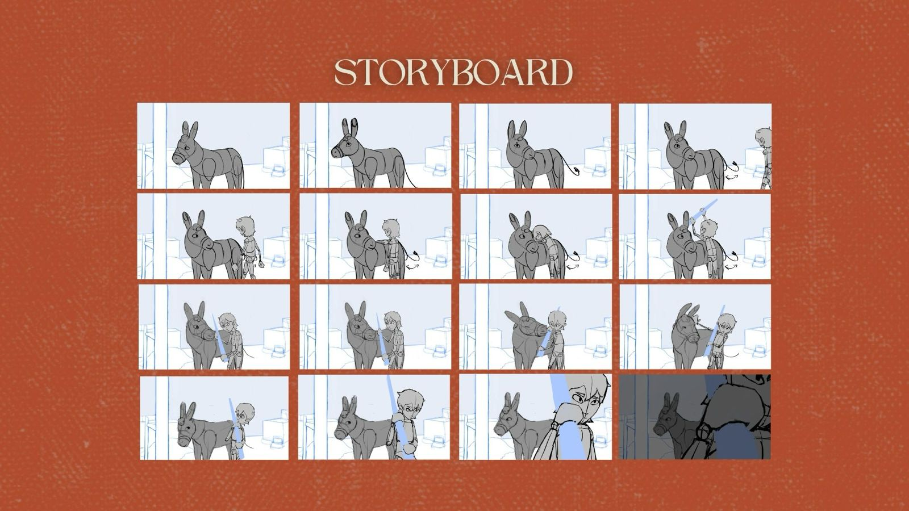
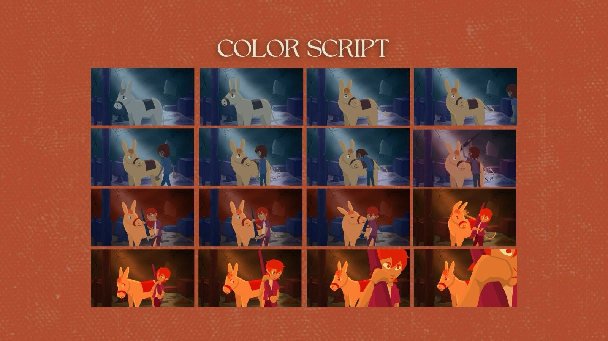